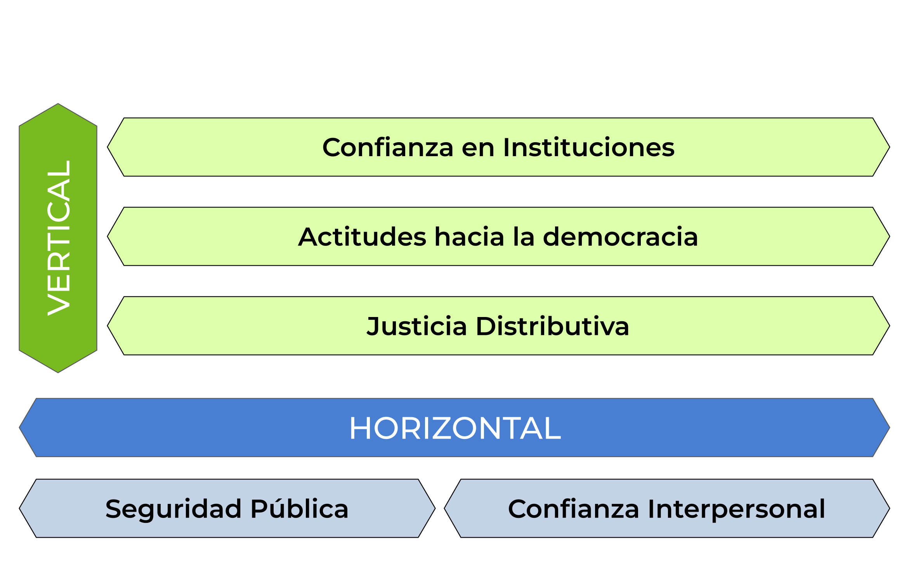

![]()
| País | Frecuencia |
|---|---|
| Bolivia | 18453 |
| Ecuador | 16775 |
| Panama | 12100 |
| Mexico | 11716 |
| Canada | 11700 |
| Peru | 11490 |
| Honduras | 11411 |
| Nicaragua | 10863 |
| Chile | 10862 |
| Uruguay | 9778 |
| Jamaica | 9136 |
| Dominican Republic | 8938 |
| United States | 8769 |
| Argentina | 8642 |
| Brazil | 8405 |
| Haiti | 8106 |
| Paraguay | 8052 |
| El Salvador | 7805 |
| Costa Rica | 7664 |
| Colombia | 7556 |
| Venezuela | 7404 |
| Guatemala | 7276 |
| Guyana | 6294 |
| Belize | 5753 |
| Trinidad & Tobago | 3309 |
| Total | 238257 |
Dos décadas de cambios en la cohesión social en América Latina (2004-2023)
Resumen
En un contexto regional marcado por crisis políticas, desigualdades persistentes y episodios de conflictividad social, comprender la evolución de la cohesión social es fundamental para evaluar la estabilidad democrática y la legitimidad institucional. Si bien existen numerosos estudios sobre las causas y consecuencias de la desconfianza o la polarización en América Latina, aún persiste un vacío en el análisis sistemático y longitudinal de la cohesión social como fenómeno integral. Este proyecto busca llenar ese vacío mediante el desarrollo de un conjunto de indicadores que permitan analizar con comparabilidad temporal y regional la evolución de las distintas dimensiones de la cohesión social.
Este artículo busca cubrir esas brechas proponiendo y validando un modelo de medición que permita un análisis comparativo, longitudinal y multinivel de la cohesión social en América Latina. En concreto, buscamos avanzar en: (i) una operacionalización clara y validada que integre dimensiones claves a partir de la literatura existente y los datos disponibles para la región; (ii) la estimación de trayectorias regionales y nacionales durante las últimas dos décadas; y (iii) la identificación de factores asociados a estos cambios mediante la aplicación de modelos de regresión multinivel híbridos. Con esto, se espera aportar evidencia robusta sobre los cambios en la región en las últimas dos décadas, aportando a la discusión académica y política sobre los desafíos y oportunidades de la cohesión social en América Latina.
Palabras clave
cohesión social, análisis multinivel, análisis longitudinal
Introducción
En América Latina, los últimos años han estado marcadas por episodios de inestabilidad política, desigualdades persistentes y bajo crecimiento económico, y ciclos de conflictividad social (United Nations Development Programme 2023; Salazar-Xirinachs 2023) . De tal modo, las tensiones sociales parecen haber aumentado en la región, reflejando una falta de confianza en las instituciones democráticas y un descontento generalizado con la corrupción y la desigualdad. En este contexto, la cohesión social ha escalado en la agenda pública y académica, con diagnósticos recientes tanto de organismos internacionales como de gobiernos nacionales que advierten sobre sus tensiones y desafíos para la gobernabilidad democrática y el desarrollo inclusivo (United Nations Development Programme 2023; Salazar-Xirinachs 2023; Juan Carlos Castillo, Espinoza, y Barozet 2022; Ministerio de Desarrollo Social y Familia 2020).
Sin embargo, pese a su uso generalizado y cotidiano en la discusión pública, definir cohesión social teórica y operacionalmente sigue siendo un desafío. La literatura oscila entre estudios focalizados en a una o varias dimensiones específicas de la cohesión social (Ariely 2013; Juan Carlos Castillo, Espinoza, y Barozet 2022; Juan Carlos Castillo et al. 2023) a esfuerzos por sintetizar el fenómeno en índices comprehensivos (Langer et al. 2016; Delhey y Dragolov 2016; Delhey et al. 2018; Dragolov et al. 2013; Janmaat 2010). Esta heterogeneidad conceptual y metodológica dificulta la comparación entre países, así como la detección de transformaciones a lo largo del tiempo.
Por lo demás, la mayoría de estas definiciones se han puesto a prueba principalmente en países europeos o de altos ingresos (Ariely 2013; Delhey y Dragolov 2016), con solo menciones parciales a América Latina (Janmaat 2010). Esta limitación se mantiene pese a que la evidencia apunta a que las diferencias nacionales y regionales en los contextos culturales, históricos e institucionales moldean la cohesión de las sociedades y los factores que la determinan (Janmaat 2010; Delhey y Dragolov 2016). De tal modo, pese a la percepción generalizada de que la cohesión social es un fenómeno en tensión en las sociedades latinoamericanas, existe evidencia empírica de las diferencias entre países, las tendencias en el tiempo y los factores que explican estos cambios.
Este artículo busca cubrir esas brechas proponiendo y validando un modelo de medición que permita un análisis comparativo, longitudinal y multinivel de la cohesión social en América Latina. En concreto, buscamos avanzar en: (i) una operacionalización clara y validada que integre dimensiones claves a partir de la literatura existente y los datos disponibles para la región; (ii) la estimación de trayectorias regionales y nacionales durante las últimas dos décadas; y (iii) la identificación de factores asociados a estos cambios mediante la aplicación de modelos de regresión multinivel. Con esto, se espera aportar evidencia robusta sobre los cambios en la región en las últimas dos décadas, aportando a la discusión académica y política sobre los desafíos y oportunidades de la cohesión social en América Latina.
Metodología
Datos
La principal fuente de datos para este estudio es la AmericasBarometer del Latin American Public Opinion Project (LAPOP Lab), también conocida como Encuesta LAPOP. La encuesta tiene por objetivo recolectar datos la opinión pública sobre democracia y gobernanza en el continente americano. El diseño de la encuesta es probalístico y representativo de la población adulta de cada país (LAPOP LAb 2023).
La encuesta se ha aplicado de manera regular desde el año 2004. A la fecha, se han realizado 9 olas que han incluido entre 11 a 23 países, sumando un total sobre 400.000 entrevistas en dos décadas. El cuestionario se administra a través de encuestas cara a cara, con la excepción de Canadá y Estados Unidos.
Como criterio, en este estudio se incluyeron únicamente los países de la región que contaban con datos disponibles para los indicadores principales del estudio en, al menos, 5 puntos en el tiempo. Como se resume en Tabla 1, se incluyen en este estudio un total de 238.257 individuos anidados en 174 olas-países en 25 países del continente americano.
Para datos contexuales de los países, se recurrió a diversas fuentes de datos que incluyen:
Los datos abiertos del Banco Mundial. Incluye diversos indicadores sobre desarrollo social y económico de la mayoría de los países del mundo. El portal de datos es accesible en: https://datos.bancomundial.org/.
The Worlwide Governance Indicators del Banco Mundial. Se trata de una encuesta a expertos que recopila datos sobre diversos indicadores de gobernanza, cubriendo múltiples países con información actualizada entre 1996 y 2003. Los datos se encuentran disponibles en: https://www.worldbank.org/en/publication/worldwide-governance-indicators.
The V-Dem Dataset. Recoge un conjunto multidimensional de datos que busca medir la calidad de la democracia alrededor del mundo. La base de datos es accesible mediante el paquete de R
vdemdata(Maerz et al. 2025)
Variables
Variables Dependientes
Se construyó un índice de Cohesión Social que se compone de dos dimensiones que, a su vez, son índices sumativos construidos a partir de indicadores de LAPOP. La selección de indicadores, subdimensiones y dimensiones está basado en el trabajo previo a nivel agregado del Observatorio de Cohesión Social, accesible aquí: https://ocscoes.github.io/medicion-cohesion-LA/.
El Índice de Cohesión Horizontal se compone de dos subdimensiones, Seguridad Urbana y Confianza Interpersonal. Seguridad urbana integra indicadores de seguridad objetiva y seguridad subjetiva. Confianza Interpersonal, en tanto, es un único indicador sobre que tan confiable son las personas en general¹.
El Índice de Cohesión Vertical se compone de dos dimensiones: Confianza en instituciones, Actitudes hacia la democracia. Confianza en las instituciones integra indicadores relativos a la confianza de los ciudadananos en el congreso, en el poder judicial y en los partidos políticos. Actitudes hacia la democracia se compone de dos indicadores sobre apoyo al sistema democrático y la satisfacción con el funcionamiento de la democracia en su país².
Los indicadores fueron estandarizados de modo que todas las subdimensiones y dimensiones de los índices tienen un rango de 0 a 10 con 0 indicando bajos niveles de cohesión social y 10 indicando altos niveles de cohesión.
Variables Independientes
Se incluyeron como variables independientes factores económicos, institucionales y culturales. Reconociendo la estructura jerárquica de los datos, se consideraron predictores a nivel individual, a nivel de olas-país, y a nivel país.
Variables Individuales
El principal predictor individual utilizado en este estudio es el nivel educativo de las personas. Las múltiples codificaciones de LAPOP para este indicador fueron únificadas para crear una variable de 3 categorías, distinguiendo individuos con educación primaria, secundaria y terciaria.
Además, se incluyen como variables de control el sexo, la edad y la posición política de los individuos.
Variables Contextuales
Prosperidad económica se medirá a través del logaritmo del PIB per cápita a valores de paridad de poder adquisitivo (PPA). Desigualdad económica en tanto se medirá a partir del Índice Gini. Ambos indicadores se extrajeron del banco de datos del Banco Mundial. Además, se incluirá el porcentaje de individuos con educación terciaria en un país como proxy de oportunidades educativas.
En cuanto a factores institucionales, se incluyó el Índice de Democracia Electoral, o poliarquía, para medir la Calidad democrática de los países. Por otro lado, se incluyó un índice de gobernanza (\(\alpha\) = 0.96) calculado a partir de los Worldwide Governace Indicators del Banco Mundial (Kaufmann y Kraay 2024).
Se medirá diversidad cultural como el porcentaje de población migrante sobre la población total del país, usando datos del Banco Mundial. Dado que la serie está disponible cada cinco año, se construyó una serie anual imputando los años intermedios mediante una interpolación logística.
Método
Análisis Factorial Confirmatorio
Se realizó un análisis factorial confirmatorio con el fin de poner a prueba el modelo construido por el Observatorio de Cohesión Social (2025) y la propuesta teórica de Chan, To, y Chan (2006). Como se observa en la Figura 1, se entiende la Cohesión Social como un constructo latente constituido de dos dimensiones latentes – Cohesión Vertical y Cohesión Horizontal.

Análisis Multinivel
Dada la estructura jerárquica de los datos, se estimaron modelos de regresión multinivel híbridos. Esta técnica permite utilizar datos a nivel individual para descomponer los efectos a nivel país en sus componentes entre países (efectos between) y dentro de un país en el tiempo (efectos within) (Schmidt-Catran y Fairbrother 2016; Fairbrother 2014). Los modelos fueron estimados usando el paquete de R lme4 (Bates et al. 2015).
El modelo propuesto se podría expresar formalmente como:
\[ y_{jti} = \beta_{0}(t) + \beta_{1}X_{jti} + \gamma_{we}(Z_{jt}-\bar{Z}_{j}) + \gamma_{be}\bar{Z}_{j} + v_j + u_{jt} + e_{jti} \] El modelo integra 3 niveles con individuos \(i\) anidados en olas-países \(t\) anidados países \(j\). \(X_{jti}\) representa variables de nivel individual mientras que \(Z_{jt}\) son variables contextuales a nivel ola-país. Dado que \(Z_{jt}\) contiene varianza tanto de nivel 2 como de nivel 3, se descompuso en el promedio de la variable a lo largo de todas sus olas (\(\bar{Z}_{j}\)) y en la desviación intra-país en una ola dada (\(Z_{jt}-\bar{Z}_{j}\)). De tal forma, \(\gamma_{we}\) representa en el efecto within, es decir, el efecto del cambio en un país en el tiempo; mientras que \(\gamma_{be}\) representa el efecto between, es decir, las diferencias estructurales entre países. Además, \(\beta_{0}(t)\) controla cambios en el tiempos no explicados por el modelo. Por último, \(v_j\), \(u_{jt}\) y \(e_{jti}\) representan los errores a nivel país, ola-país e individual.
Resultados
Análisis Factorial Confirmatorio

Nota. RMSEA = 0.022, CFI = 0.998, Chi-cuadrado = 111.6, gl = 1, p-valor = 0.
En Figura 2 se presentan los resultados del análisis factorial confirmatorio hecho a partir del modelo de medición propuesto. En primer lugar, se observa que los indicadores presentan cargas factoriales moderadas, las cuales van del 0.45 al 0.6 dependiendo del caso, lo que sugiere que los indicadores reflejan parcialmente las dimensiones latentes. Los índices de ajuste son de buena calidad, apuntando a una fiabilidad del constructo. Ahora, dado que el modelo cuenta con un solo grado de libertad, las medidas de ajuste global deben interpretarse con precaución. En suma, el modelo ofrece un ajuste aceptable a nivel identificacional, pero la validez de los factores son limitadas, lo que podría solucionarse aumentando el número o la calidad de los indicadores en futuras mediciones.
Descriptivos
A continuación se presentan los resultados descriptivos sobre los cambios de la cohesión social en América Latina en los últimos 20 años.

En Figura 3 se visualizan los promedios de cada año para los distintos tipos de cohesión. En primer lugar, se puede observar que la cohesión horizontal mantiene un patrón ascendente entre 2004 y 2012, exceptuando la caída del año 2010. Posterior a esto, la cohesión horizontal se enfrenta a una decaída sostenida hasta el 2018, para luego volver a repuntar e incluso superando su nivel registrado en 2004. La cohesión vertical presenta un patrón de variación parecido al de la cohesión horizontal, evidenciando un alza persistente en el tiempo hasta el año 2012, donde luego sufre una caída abrupta a nivel regional. Este descenso se mantuvo hasta el 2016, donde luego se revertiría esta dinámica, notándose un aumento de la cohesión vertical hasta el último año registrado. Si bien, la última medición de la cohesión vertical muestra niveles superiores al del inicio, sus puntuaciones en general son considerablemente bajas al compararlas con la cohesión horizontal, diferenciándose en todas las olas por aproximadamente 1.5 puntos. En suma, en América Latina se denota una mayor cohesión horizontal por sobre la vertical de manera consistente desde el 2004 hasta el 2022.

En Figura 4 se presentan los promedios por año de las subdimensiones horizontales, seguridad pública y confianza interpersonal. En la seguridad pública se observa un patrón inestable entre los años 2004 y 2012, marcado por descensos y ascensos alternados. Posterior a 2012 se evidencia un fuerte deterioro en la subdimensión hasta 2018, viéndose un repunte después de este año, sin embargo, la recuperación no logra llegar a los niveles de seguridad que existían en un principio. La confianza interpersonal, por su parte, presenta un aumento hasta el 2010, año en el que sufre una leve caída, pero el año siguiente volviendo a ascender. Post 2012 se observa un patrón similar al de seguridad pública, con un descenso sostenido hasta el año 2018 para luego recuperarse. Una de las principales diferencias entre las dos subdimensiones es que, mientras en 2022 seguridad pública registró un promedio inferior al de la primera ola, los niveles de confianza interpersonal en 2022 fueron mayores que los de 2004.

En Figura 5 están graficados los cambios en el tiempo de las dos subdimensiones de cohesión vertical. Actitud hacia la democracia presenta un alza sostenida hasta el 2008, donde luego sufre una caída paulatina, destacándose un descenso abrupto entre 2014 y 2016. Posterior a esto, las afecciones hacia la democracia evidencian nuevamente un ascenso en sus niveles regionales, sin embargo, no logra alcanzar sus niveles iniciales. En confianza en instituciones se observan niveles ascendentes desde 2004 hasta 2012, a excepción de la baja del 2008. Los años siguientes se evidencia un decrecimiento en la confianza institucional hasta el 2016, para luego demostrar un repunte hasta el último año registrado, llegando a superar los niveles de confianza en instituciones del 2004.
Modelos Multinivel
Modelos Nulos
Cohesión Horizontal
| m1 | m2 | m3 | m4 | |||||
|---|---|---|---|---|---|---|---|---|
| Predictors | Estimates | p | Estimates | p | Estimates | p | Estimates | p |
| (Intercept) | 6.29 | <0.001 | 6.31 | <0.001 | 6.30 | <0.001 | 6.28 | <0.001 |
| nivel educ [Primary] | -0.03 | 0.088 | -0.03 | 0.089 | -0.03 | 0.092 | -0.03 | 0.092 |
| nivel educ [Secondary] | -0.15 | <0.001 | -0.15 | <0.001 | -0.15 | <0.001 | -0.15 | <0.001 |
| sexo [Male] | 0.22 | <0.001 | 0.22 | <0.001 | 0.22 | <0.001 | 0.22 | <0.001 |
| edad c | 0.10 | <0.001 | 0.10 | <0.001 | 0.10 | <0.001 | 0.10 | <0.001 |
| edad c^2 | 0.06 | <0.001 | 0.06 | <0.001 | 0.06 | <0.001 | 0.06 | <0.001 |
| pos politica [Left] | -0.17 | <0.001 | -0.17 | <0.001 | -0.17 | <0.001 | -0.17 | <0.001 |
| pos politica [Center] | -0.05 | 0.007 | -0.05 | 0.008 | -0.05 | 0.008 | -0.05 | 0.008 |
| pos politica [Right] | 0.05 | 0.003 | 0.06 | 0.003 | 0.06 | 0.003 | 0.06 | 0.003 |
| ola s | -0.12 | <0.001 | -0.26 | 0.009 | -0.26 | 0.009 | -0.25 | 0.010 |
| pib we | 0.13 | 0.121 | 0.13 | 0.103 | 0.14 | 0.083 | ||
| gini we | -0.04 | 0.414 | -0.04 | 0.453 | -0.04 | 0.416 | ||
| dem we | -0.06 | 0.102 | -0.05 | 0.111 | -0.05 | 0.136 | ||
| wgi we | -0.02 | 0.444 | -0.02 | 0.463 | -0.02 | 0.460 | ||
| mig we | -0.07 | 0.054 | -0.08 | 0.047 | -0.10 | 0.034 | ||
| edu we | 0.00 | 0.971 | 0.00 | 0.894 | 0.00 | 0.933 | ||
| pib be | -0.02 | 0.892 | -0.01 | 0.945 | ||||
| gini be | -0.05 | 0.572 | -0.07 | 0.506 | ||||
| dem be | -0.23 | 0.140 | -0.21 | 0.218 | ||||
| wgi be | 0.46 | 0.016 | 0.44 | 0.033 | ||||
| mig be | 0.42 | 0.026 | 0.37 | 0.082 | ||||
| edu be | -0.38 | 0.005 | -0.40 | 0.006 | ||||
| mig we × wgi be | 0.02 | 0.554 | ||||||
| gini be × edu be | -0.04 | 0.607 | ||||||
| gini we × edu be | -0.04 | 0.436 | ||||||
| Random Effects | ||||||||
| σ2 | 4.99 | 4.99 | 4.99 | 4.99 | ||||
| τ00 | 0.10 country_wave | 0.10 country_wave | 0.10 country_wave | 0.10 country_wave | ||||
| 0.27 pais | 0.30 pais | 0.09 pais | 0.09 pais | |||||
| ICC | 0.07 | 0.07 | 0.04 | 0.04 | ||||
| N | 130 country_wave | 130 country_wave | 130 country_wave | 130 country_wave | ||||
| 22 pais | 22 pais | 22 pais | 22 pais | |||||
| Observations | 179377 | 179377 | 179377 | 179377 | ||||
| Marginal R2 / Conditional R2 | 0.012 / 0.081 | 0.015 / 0.087 | 0.055 / 0.088 | 0.056 / 0.090 | ||||
Cohesión Vertical
| m1 | m2 | m3 | m4 | |||||
|---|---|---|---|---|---|---|---|---|
| Predictors | Estimates | p | Estimates | p | Estimates | p | Estimates | p |
| (Intercept) | 4.47 | <0.001 | 4.47 | <0.001 | 4.47 | <0.001 | 4.44 | <0.001 |
| nivel educ [Primary] | 0.10 | <0.001 | 0.10 | <0.001 | 0.10 | <0.001 | 0.10 | <0.001 |
| nivel educ [Secondary] | -0.01 | 0.228 | -0.01 | 0.228 | -0.01 | 0.231 | -0.01 | 0.231 |
| sexo [Male] | 0.02 | 0.024 | 0.02 | 0.024 | 0.02 | 0.024 | 0.02 | 0.024 |
| edad c | -0.01 | 0.008 | -0.01 | 0.008 | -0.01 | 0.008 | -0.01 | 0.008 |
| edad c^2 | 0.09 | <0.001 | 0.09 | <0.001 | 0.09 | <0.001 | 0.09 | <0.001 |
| pos politica [Left] | 0.07 | <0.001 | 0.07 | <0.001 | 0.07 | <0.001 | 0.07 | <0.001 |
| pos politica [Center] | 0.19 | <0.001 | 0.19 | <0.001 | 0.19 | <0.001 | 0.19 | <0.001 |
| pos politica [Right] | 0.60 | <0.001 | 0.60 | <0.001 | 0.60 | <0.001 | 0.60 | <0.001 |
| ola s | -0.17 | <0.001 | -0.28 | 0.021 | -0.44 | <0.001 | -0.43 | <0.001 |
| pib we | -0.02 | 0.864 | 0.08 | 0.457 | 0.07 | 0.536 | ||
| gini we | -0.09 | 0.153 | -0.12 | 0.069 | -0.12 | 0.054 | ||
| dem we | -0.19 | <0.001 | -0.21 | <0.001 | -0.20 | <0.001 | ||
| wgi we | 0.09 | 0.020 | 0.08 | 0.040 | 0.06 | 0.183 | ||
| mig we | -0.04 | 0.367 | -0.03 | 0.508 | -0.00 | 0.982 | ||
| edu we | 0.01 | 0.825 | 0.02 | 0.619 | 0.03 | 0.447 | ||
| pib be | 0.02 | 0.878 | 0.05 | 0.744 | ||||
| gini be | -0.26 | 0.009 | -0.28 | 0.009 | ||||
| dem be | 0.03 | 0.834 | 0.06 | 0.729 | ||||
| wgi be | 0.19 | 0.337 | 0.14 | 0.518 | ||||
| mig be | 0.23 | 0.241 | 0.16 | 0.464 | ||||
| edu be | -0.38 | 0.008 | -0.41 | 0.008 | ||||
| mig we × wgi be | -0.06 | 0.107 | ||||||
| gini be × edu be | -0.05 | 0.572 | ||||||
| gini we × edu be | -0.04 | 0.508 | ||||||
| Random Effects | ||||||||
| σ2 | 2.96 | 2.96 | 2.96 | 2.96 | ||||
| τ00 | 0.20 country_wave | 0.16 country_wave | 0.17 country_wave | 0.17 country_wave | ||||
| 0.21 pais | 0.21 pais | 0.08 pais | 0.09 pais | |||||
| ICC | 0.12 | 0.11 | 0.08 | 0.08 | ||||
| N | 130 country_wave | 130 country_wave | 130 country_wave | 130 country_wave | ||||
| 22 pais | 22 pais | 22 pais | 22 pais | |||||
| Observations | 179377 | 179377 | 179377 | 179377 | ||||
| Marginal R2 / Conditional R2 | 0.028 / 0.147 | 0.040 / 0.147 | 0.077 / 0.148 | 0.078 / 0.151 | ||||
Cohesión General
| m1 | m2 | m3 | m4 | |||||
|---|---|---|---|---|---|---|---|---|
| Predictors | Estimates | p | Estimates | p | Estimates | p | Estimates | p |
| (Intercept) | 5.38 | <0.001 | 5.39 | <0.001 | 5.38 | <0.001 | 5.35 | <0.001 |
| nivel educ [Primary] | 0.04 | 0.001 | 0.04 | 0.001 | 0.04 | 0.001 | 0.04 | 0.001 |
| nivel educ [Secondary] | -0.08 | <0.001 | -0.08 | <0.001 | -0.08 | <0.001 | -0.08 | <0.001 |
| sexo [Male] | 0.12 | <0.001 | 0.12 | <0.001 | 0.12 | <0.001 | 0.12 | <0.001 |
| edad c | 0.04 | <0.001 | 0.04 | <0.001 | 0.04 | <0.001 | 0.04 | <0.001 |
| edad c^2 | 0.08 | <0.001 | 0.08 | <0.001 | 0.08 | <0.001 | 0.08 | <0.001 |
| pos politica [Left] | -0.05 | <0.001 | -0.05 | <0.001 | -0.05 | <0.001 | -0.05 | <0.001 |
| pos politica [Center] | 0.07 | <0.001 | 0.07 | <0.001 | 0.07 | <0.001 | 0.07 | <0.001 |
| pos politica [Right] | 0.33 | <0.001 | 0.33 | <0.001 | 0.33 | <0.001 | 0.33 | <0.001 |
| ola s | -0.14 | <0.001 | -0.26 | 0.007 | -0.33 | <0.001 | -0.33 | <0.001 |
| pib we | 0.05 | 0.560 | 0.10 | 0.207 | 0.10 | 0.210 | ||
| gini we | -0.06 | 0.189 | -0.08 | 0.109 | -0.08 | 0.085 | ||
| dem we | -0.12 | <0.001 | -0.13 | <0.001 | -0.13 | <0.001 | ||
| wgi we | 0.04 | 0.253 | 0.03 | 0.292 | 0.02 | 0.590 | ||
| mig we | -0.06 | 0.115 | -0.06 | 0.138 | -0.05 | 0.270 | ||
| edu we | 0.00 | 0.886 | 0.01 | 0.722 | 0.02 | 0.598 | ||
| pib be | 0.01 | 0.950 | 0.02 | 0.822 | ||||
| gini be | -0.15 | 0.020 | -0.17 | 0.013 | ||||
| dem be | -0.11 | 0.299 | -0.08 | 0.477 | ||||
| wgi be | 0.32 | 0.011 | 0.29 | 0.032 | ||||
| mig be | 0.33 | 0.008 | 0.27 | 0.048 | ||||
| edu be | -0.38 | <0.001 | -0.40 | <0.001 | ||||
| mig we × wgi be | -0.02 | 0.432 | ||||||
| gini be × edu be | -0.04 | 0.400 | ||||||
| gini we × edu be | -0.04 | 0.405 | ||||||
| Random Effects | ||||||||
| σ2 | 2.33 | 2.33 | 2.33 | 2.33 | ||||
| τ00 | 0.11 country_wave | 0.10 country_wave | 0.09 country_wave | 0.10 country_wave | ||||
| 0.17 pais | 0.18 pais | 0.03 pais | 0.03 pais | |||||
| ICC | 0.11 | 0.11 | 0.05 | 0.05 | ||||
| N | 130 country_wave | 130 country_wave | 130 country_wave | 130 country_wave | ||||
| 22 pais | 22 pais | 22 pais | 22 pais | |||||
| Observations | 179377 | 179377 | 179377 | 179377 | ||||
| Marginal R2 / Conditional R2 | 0.025 / 0.132 | 0.034 / 0.136 | 0.092 / 0.138 | 0.094 / 0.139 | ||||
Modelo finales
Referencias
ANDREWS, RHYS, y SEBASTIAN JILKE. 2015. «Welfare States and Social Cohesion in Europe: Does Social Service Quality Matter?» Journal of Social Policy 45 (1): 119-40. https://doi.org/10.1017/s0047279415000513.
Araujo, Kathya, Macarena Orchard, Alejandra Rasse, y Antonio Stecher. 2022. «Primer Informe de Resultados Encuesta Nacional de Autoridad NUMAAP 2021». Santiago de Chile: NUMAAP.
Ariely, Gal. 2013. «Does Diversity Erode Social Cohesion? Conceptual and Methodological Issues». Political Studies 62 (3): 573-95. https://doi.org/10.1111/1467-9248.12068.
Bates, Douglas, Martin Mächler, Ben Bolker, y Steve Walker. 2015. «Fitting Linear Mixed-Effects Models Using Lme4». Journal of Statistical Software 67 (1). https://doi.org/10.18637/jss.v067.i01.
Cabib, Ignacio, Daniel Miranda, Juan Pablo Ormeño, y Daniela Moyano. 2025. «Nuestras Trayectorias. Dinámicas intra-individuales e inter-individuales en Chile (2016-2023)». https://doi.org/10.13140/RG.2.2.23888.62720.
Castillo, Juan Carlos, Vicente Espinoza, y Emmanuelle Barozet. 2022. «Cohesión social en Chile en tiempos de cambio: indicadores, perfiles y factores asociados».
Castillo, Juan-Carlos, Francisco Olivos, y Julio Iturra. 2021. «Conceptos y Medición de Cohesión Social En Proyectos Internacionales». Documentos de {{Trabajo COES}} 47. Santiago: COES.
Chan, Joseph, Ho-Pong To, y Elaine Chan. 2006. «Reconsidering Social Cohesion: Developing a Definition and Analytical Framework for Empirical Research». Social Indicators Research 75 (2): 273-302. https://doi.org/10.1007/s11205-005-2118-1.
Delhey, Jan, y Georgi Dragolov. 2016. «Happier Together. Social Cohesion and Subjective Well-Being in Europe: HAPPIER TOGETHER-COHESION AND SWB». International Journal of Psychology 51 (3): 163-76. https://doi.org/10.1002/ijop.12149.
Fairbrother, Malcolm. 2014. «Two Multilevel Modeling Techniques for Analyzing Comparative Longitudinal Survey Datasets». Political Science Research and Methods 2 (1): 119-40. https://doi.org/10.1017/psrm.2013.24.
Gijsberts, Mérove, Tom van der Meer, y Jaco Dagevos. 2011. «“Hunkering Down” in Multi-Ethnic Neighbourhoods? The Effects of Ethnic Diversity on Dimensions of Social Cohesion». European Sociological Review 28 (4): 527-37. https://doi.org/10.1093/esr/jcr022.
Kaufmann, Daniel, y Aart Kraay. 2024. «The Worldwide Governance Indicators». Policy {{Research Working Paper}} WPS10952. Washington D.C.: World Bank.
Kustov, Alexander, y Giuliana Pardelli. 2024. «Beyond Diversity: The Role of State Capacity in Fostering Social Cohesion in Brazil». World Development 180 (agosto): 106625. https://doi.org/10.1016/j.worlddev.2024.106625.
Langer, Arnim, Frances Stewart, Kristien Smedts, y Leila Demarest. 2016. «Conceptualising and Measuring Social Cohesion in Africa: Towards a Perceptions-Based Index». Social Indicators Research 131 (1): 321-43. https://doi.org/10.1007/s11205-016-1250-4.
LAPOP LAb. 2023. «AmericasBarometer».
Maerz, Seraphine F., Amanda B. Esgell, Sebastian Hellemeier, Nina Illchenko, y Linnea Fox. 2025. «Vdemdata: An R Package to Load, Explore and Work with the Most Recent V-Dem (Varieties of Democracy) Dataset.»
Meer, Tom van der, y Jochem Tolsma. 2014. «Ethnic Diversity and Its Effects on Social Cohesion». Annual Review of Sociology 40 (1): 459-78. https://doi.org/10.1146/annurev-soc-071913-043309.
Ministerio de Desarrollo Social y Familia. 2020. «Informe Final Consejo Asesor Para La Cohesión Social. Diagnóstico Para Una Aproximación a La Cohesión Social En Chile y Recomendaciones Para Fortalecer El Aporte de La Política Social».
Njozela, Lindokuhle, I. Shaw, y J. Burns. 2016. «Towards Measuring Social Cohesion in South Africa».
Reeskens, Tim, y Matthew Wright. 2012. «Nationalism and the Cohesive Society». Comparative Political Studies 46 (2): 153-81. https://doi.org/10.1177/0010414012453033.
Salazar-Xirinachs, José Manuel. 2023. «Repensar, reimaginar, transformar: los “qué” y los “cómo” para avanzar hacia un modelo de desarrollo más productivo, inclusivo y sostenible». Revista de la CEPAL 2023 (141): 11-43. https://doi.org/10.18356/16820908-2023-141-2.
Schmidt-Catran, Alexander W., y Malcolm Fairbrother. 2016. «The Random Effects in Multilevel Models: Getting Them Wrong and Getting Them Right». European Sociological Review 32 (1): 23-38. https://doi.org/10.1093/esr/jcv090.
Somma, Nicolás M, y Eduardo Valenzuela. 2015. «Las Paradojas de La Cohesión Social En América Latina». Revista del CLAD Reforma y Democracia, n.º 61: 43-74.
Stefoni, Carolina. 2018. «Panorama de la migración internacional en América del Sur».
Toppi, Hernán Pablo. 2018. «Guillermo O’Donnell y Su Aporte al Desarrollo de La Democracia En América Latina Desde La Tercera Ola de Democratización». REVISTA IUS 12 (42). https://doi.org/10.35487/rius.v12i42.2018.407.
United Nations Development Programme. 2023. Trapped: High Inequality and Low Growth in Latin America and the Caribbean: Regional Human Development Report 2021. United Nations. https://doi.org/10.18356/9789210057844.